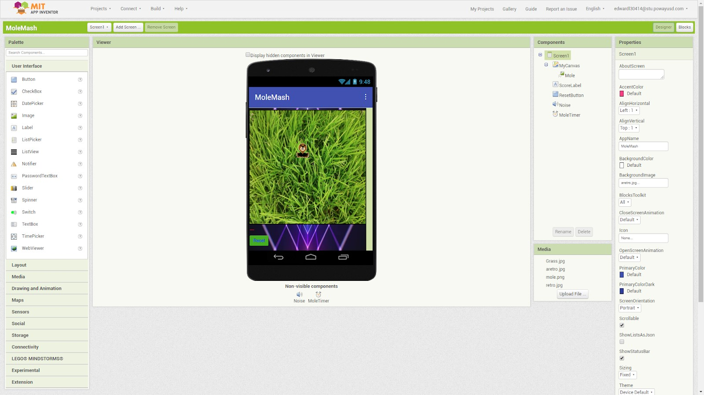
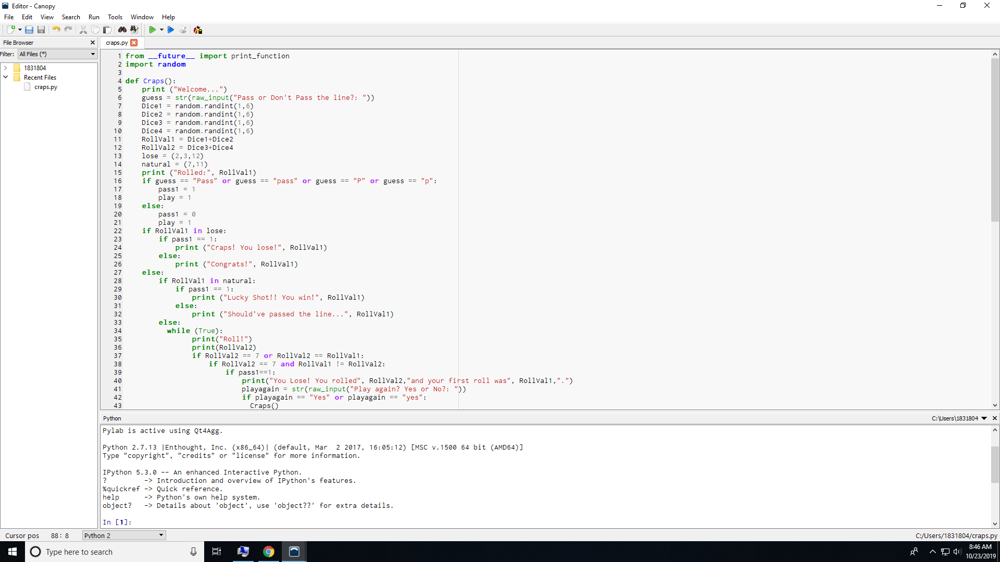
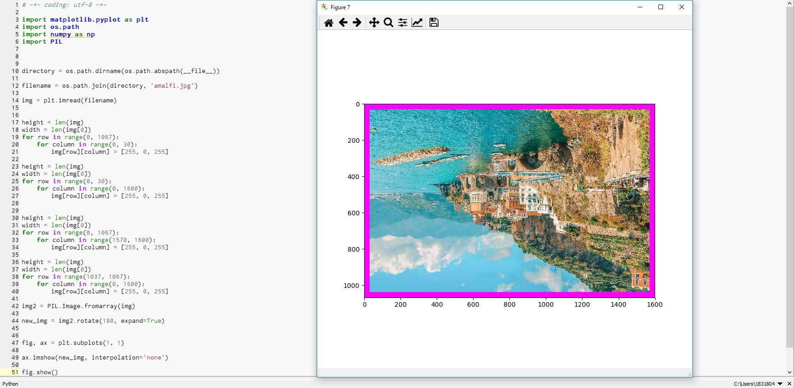

Here is all of my work
Home About MeThese are my scratch projects. We created three different games. The first one features is about a duck trying to find its way back home. You can also collect little fruits for it during the journey. The second game is a bouncing ball game where you try to keep the ball up in the air with the movable floating block. The last game is a bear who is trying to find its way back home. enjoy!
This is my MitApp inventor project. It is a whack a mole game. The mole moves around in sporadic patterns and the objective of the game is to hit the mole as many times as possible to increase your score.
press run to restart the game. This is my python project. It is an interactive game that allows the player to choose their own path through the game. It is about a knight who goes on a mission to resuce his princess who was kidnapped and sent away to a tower. The knight has to make a series of decisions during his journey to fight dragons or in determining which path to take.
CRAPS! This is our python 3.0 game by katty, blake, and me. It is a game that generates random integers and you win by chance.
This is my Canopy image. It is a picture of the Amalfi coast. We converted the picture into a plt image in order to edit the individual pixels, and then to a PIL to commit changes to the entire image like rotating it 180 degrees.


This is my data collection project. It is about the different contributing factors to air pollution, displayed in a pie chart. We were suprised that agriculture was the greatest contributior, even beating out manufacturing and transportation